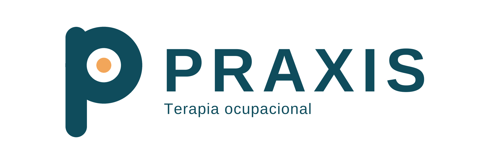
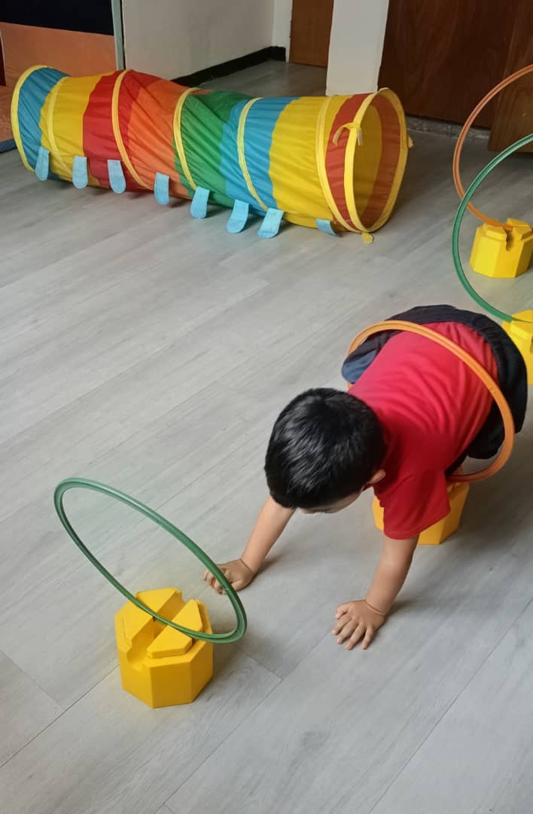
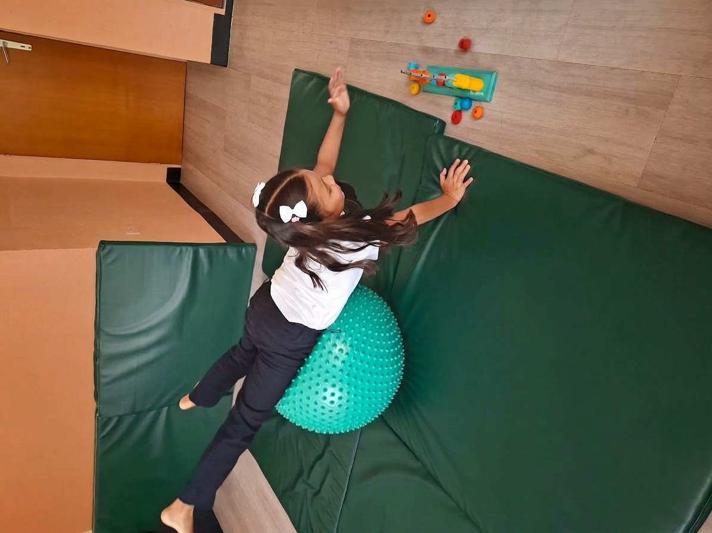
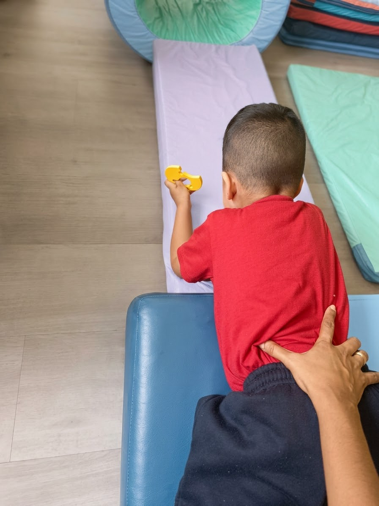
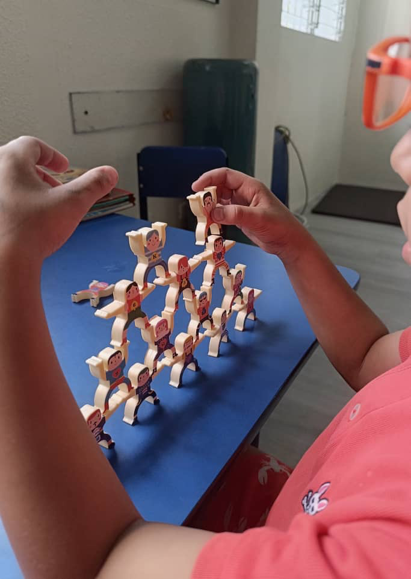

Integración sensorial
Evaluación e intervención para comprender cómo se procesan los estímulos y apoyar la regulación, la atención, el descanso y la participación diaria.
Conocer más ↗
Consultar por WhatsAppTerapia ocupacional · Caracas y online
Acompaño a niños, adolescentes, adultos y familias a comprender sus necesidades sensoriales y desarrollar habilidades para participar con mayor autonomía en su día a día.
Tu familia no necesita tener todas las respuestas para empezar. Podemos comprender juntos qué está pasando y decidir el siguiente paso.
Hablemos ↗Áreas de atención
La terapia ocupacional conecta las capacidades de cada persona con las actividades que necesita y desea hacer en casa, en el colegio, en el trabajo y en comunidad.
Evaluación e intervención para comprender cómo se procesan los estímulos y apoyar la regulación, la atención, el descanso y la participación diaria.
Conocer más ↗Estrategias graduales y respetuosas para ampliar la variedad de alimentos y hacer de las comidas un momento más tranquilo para la familia.
Conocer más ↗Práctica guiada para adolescentes: organizar rutinas, usar transporte público, manejar dinero, hacer compras y ganar independencia.
Conocer más ↗Coaching claro y práctico para familias que acaban de recibir un diagnóstico de autismo y buscan saber qué hacer primero.
Conocer más ↗Atención a niños, adolescentes, adultos, familias y colegios. Cada propuesta se ajusta a las necesidades y metas de la persona.
Lo que se logra en consulta tiene que poder acompañar a la persona en su casa, su colegio y su comunidad.
Una terapia conectada con la vida cotidiana
Hola, soy Yobanka
Soy licenciada en Terapia Ocupacional y tengo 21 años de experiencia profesional en Venezuela. He trabajado en rehabilitación física, rehabilitación de adicciones y atención a niños, una trayectoria que amplió mi mirada clínica y me enseñó a comprender a cada persona dentro de su contexto.
Me especializo en integración sensorial para niños, adolescentes y adultos, selectividad alimentaria y autonomía. Trabajo desde las fortalezas de cada persona y con actividades significativas para que los avances puedan trasladarse a la vida diaria.
Me gusta ofrecer orientación clara, metas concretas y un trato cercano. No necesitas llegar con todas las respuestas: empezamos por escuchar y comprender lo que necesitas.
Formación continua
Diplomado Internacional en Integración Sensorial, mención Infancias — En Palabras Simples
Programa avanzado FAM PRO: razonamiento clínico en selectividad y trastornos de la conducta alimentaria
Diplomado en Integración Sensorial en Adolescentes y Adultos — En Palabras Simples Spa
Diplomado en Terapia Ocupacional e Integración Sensorial, abordaje de población infantil — UCV / AVIS
Cómo trabajamos
La evaluación ayuda a comprender las necesidades y acordar un plan con objetivos claros. El ritmo y la frecuencia se definen en conjunto según cada caso.




El juego y las actividades con propósito permiten practicar habilidades en un entorno cercano.
Conversamos sobre el motivo de consulta y los retos que aparecen en casa, colegio, trabajo o comunidad.
Según la edad, podemos observar actividades, jugar y utilizar cuestionarios para conocer fortalezas y necesidades.
Te explico lo observado y proponemos pasos y objetivos alcanzables, incluyendo pautas para casa.
Las sesiones usan actividades con propósito; revisamos el progreso y ajustamos el plan cuando hace falta.
Atención flexible
Las consultas presenciales se realizan en Caracas, con cita previa. También ofrezco atención online para personas y familias en Venezuela y otros países de habla hispana, mediante Meet o Zoom.
Consultar disponibilidad ↗9:00 a. m. – 4:00 p. m.
Únicamente con cita previa
La dirección de consulta se comparte directamente al coordinar la cita.
Es un espacio para escuchar el motivo de consulta y comenzar una evaluación. Según la edad y las necesidades, puede incluir observación, actividades, juego o cuestionarios. Al final conversamos sobre lo observado y los pasos posibles.
Son activas y adaptadas a cada caso. Podemos trabajar mediante juego, movimiento, tareas cotidianas y actividades diseñadas para desarrollar habilidades y apoyar la regulación. En cada encuentro revisamos avances y compartimos pautas prácticas.
Sí. Las consultas online se realizan por Meet o Zoom, en español, para personas y familias en Venezuela y otros países hispanohablantes. Escríbeme para conversar sobre la modalidad adecuada para tu consulta.
La frecuencia depende de la evaluación y los objetivos. Generalmente se comienza una vez por semana; a medida que hay avances, se puede espaciar, siempre acordándolo en conjunto.
Escríbeme por WhatsApp para consultar disponibilidad y coordinar una cita. Los métodos de pago informados son efectivo en divisas, pago móvil y Binance. El precio se confirma directamente al reservar.
No trabajo con seguros médicos y este servicio no es de atención de emergencias psicológicas. Si existe una emergencia inmediata, contacta los servicios de emergencia de tu localidad.
Un primer paso
Cuéntame qué está ocurriendo y te orientaré sobre cómo podemos avanzar.